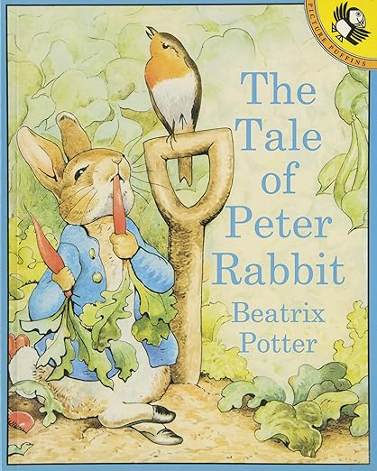

Enverly
Week 3 · 6月
今月の教材絵本

6月のテーマ · Colors & Animals
Joel先生と
一緒に読もう
一緒に読もう
Brown Bear, Brown Bear — Bill Martin Jr.
📅 今週のスケジュール
🎙 Morning Talk
朝のラジオ
朝のひととき、ラジオ感覚で流してみてね。
ふと出てきたフレーズが、今日の親子の話のきっかけになりますように。
Joel & Mai Time
Colors & Animals
"What animal did you see today?"
今日のお話：今日見た動物は何色だった？
0:00
💬今日のフレーズ
▼
"What animal did you see today?"今日どんな動物見た？
"It was brown!"茶色だったよ！
MON4
What color is your favorite animal?
3:12 · 再生済み
✓
WED6
What animal did you see today?
3:40 · 今日の分
FRI8
配信は金曜の朝
お楽しみに
🔒
📌 今週やること
Weekly Pick
今週の一冊
寝る前や日本語の絵本と一緒に取り入れてみてね。毎日読むと英語フレーズが自然に残っていくよ。

ブラウザで絵と一緒に読む
Project Gutenberg · イラスト付き
おすすめ・無料
↗
PDFで見る
Free Kids Books · 絵本レイアウト版
↗
手元に置く（Amazon）
英語原書ペーパーバック · ¥800〜
↗
🔍なぜこの本が選ばれたの？
▼
動物の名前・色・野菜が自然に出てくる名作。rabbit・carrot・garden などが繰り返し登場し、今月のテーマ「Colors & Animals」にぴったりです。
Weekly Playlist
今月のテーマに合わせた曲
タップでYouTubeが開きます。かけ流しはスピーカーから流すのがおすすめ。